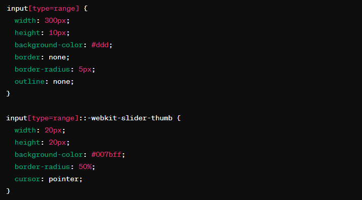
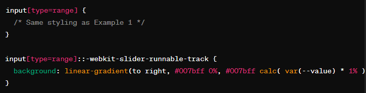

In the realm of web development, enhancing user interaction is a perpetual pursuit. One often-overlooked gem for achieving this is the CSS range property. In this blog post, we'll dive into what the range property offers, how it functions, and explore practical examples to illustrate its potential for creating engaging user interfaces.
The CSS `range` property allows developers to style HTML input elements of type `range`. These elements are commonly used for selecting numeric values within a specified range, such as sliders and range selectors. By applying CSS styling to these elements, developers can customize their appearance to align with the overall design aesthetic of their website.
Let's start with a simple example of customizing a slider's appearance. Consider the following CSS:
In this example, we've styled the track of the slider with a gray background and added a blue circular thumb using ::-webkit-slider-thumb. This creates a visually appealing slider that fits seamlessly into the design of the website.
Now, let's explore how we can provide dynamic feedback to users as they interact with the slider. We can achieve this by changing the color of the fill as the slider moves. Consider the following CSS:
In this example, we're using a linear gradient background for the track. As the slider moves, the gradient dynamically adjusts to reflect the current value selected by the user, providing visual feedback in real-time.
The CSS `range` property offers developers a powerful tool for enhancing user interaction and visual appeal in web interfaces. By customizing the appearance of input range elements and providing dynamic feedback, developers can create intuitive and engaging user experiences. Experiment with the `range` property in your projects, and unlock its potential to elevate your designs and delight your users.
You can contact me on